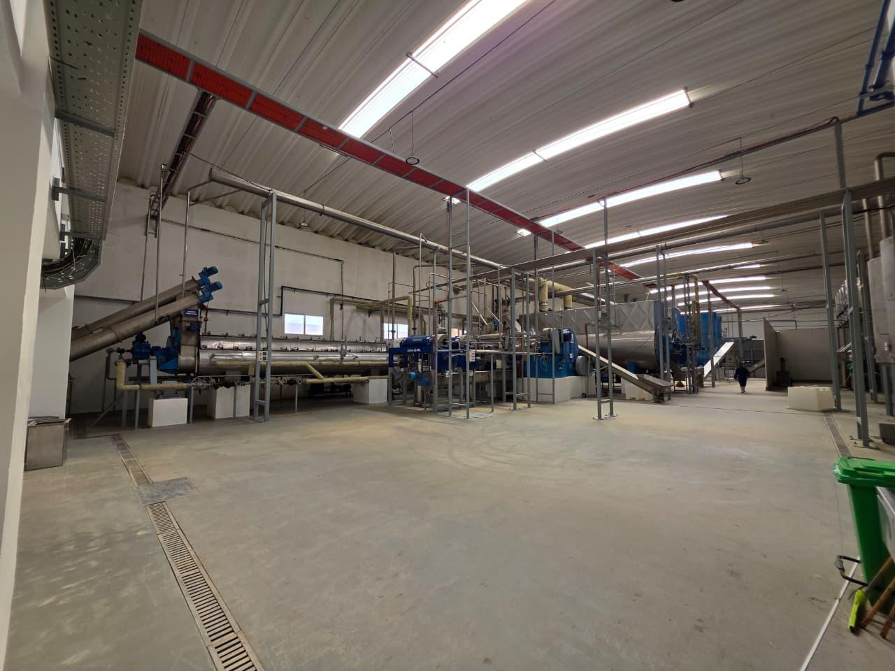
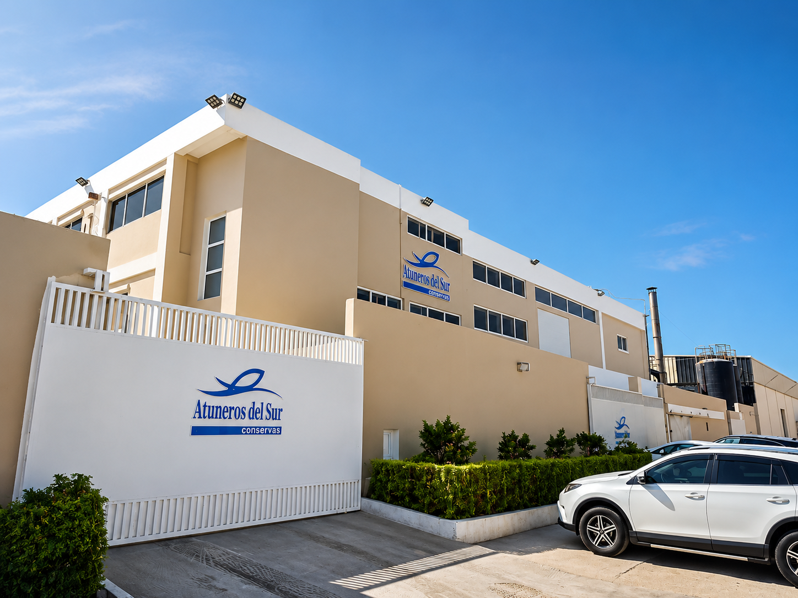
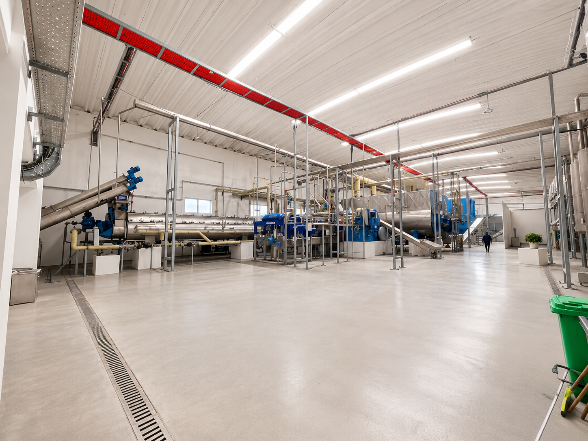
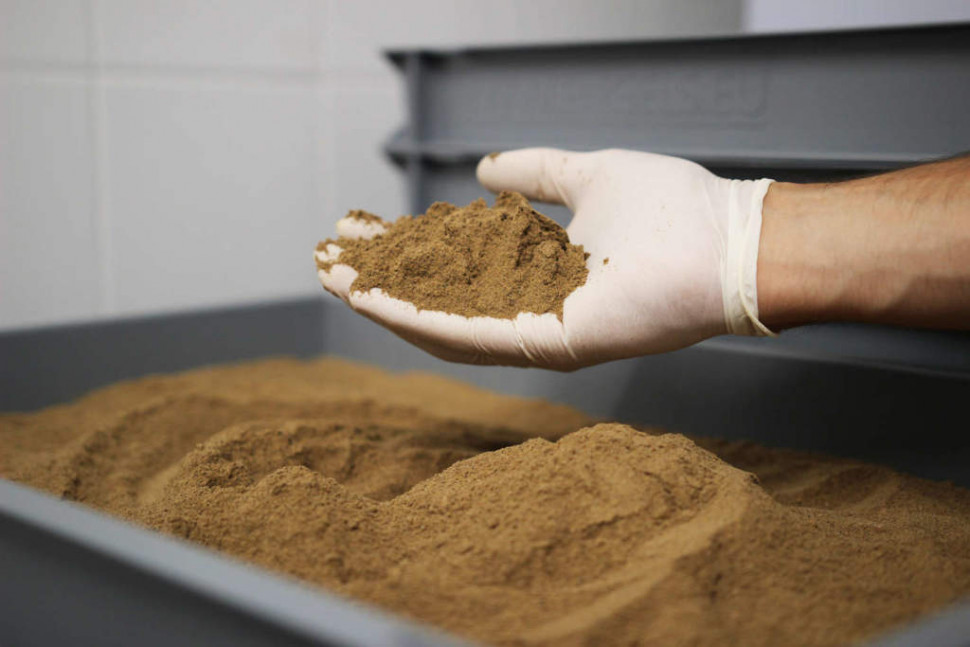
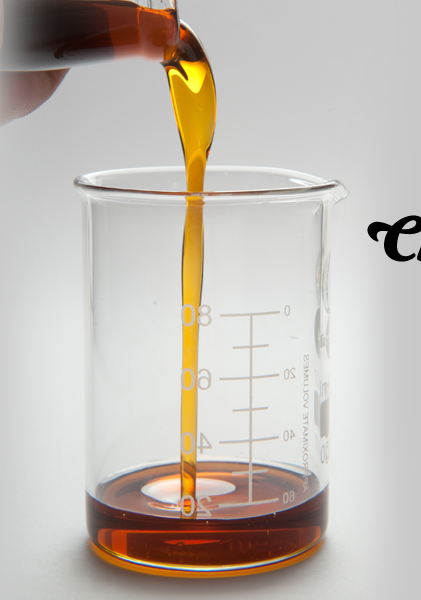
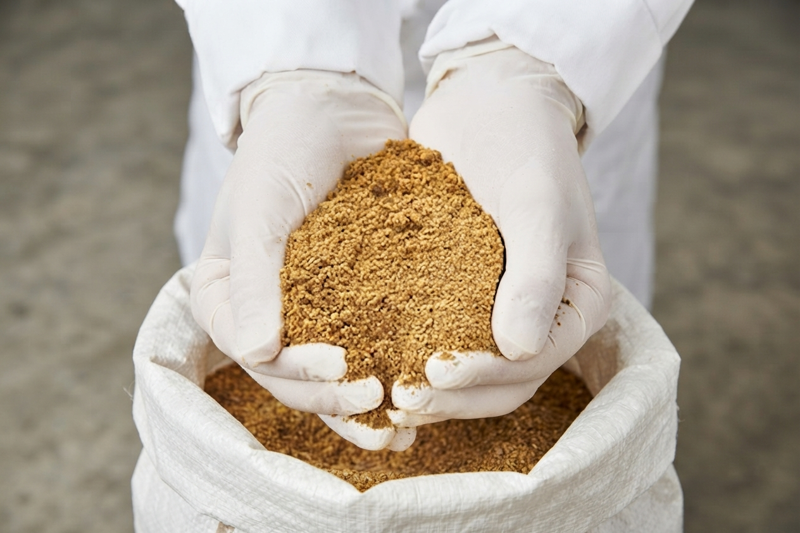
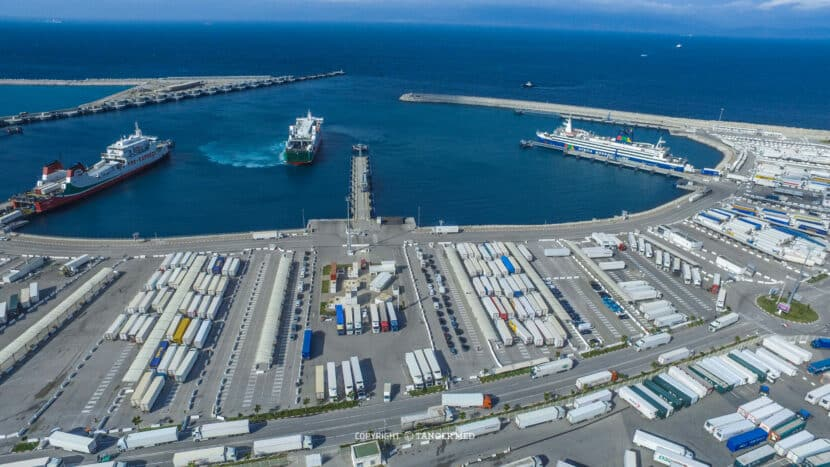

01
Marine origin
Raw material from local Atlantic and Mediterranean landings, received fresh at the plant and chilled within hours.
Local fleets · daily landings



Fish meal & fish oil · Dakhla, Morocco
Premium fish meal and fish oil, produced in Morocco for demanding global markets — traceable from raw material reception to shipment.
01 / Who we are
Three things define the company: where the raw material comes from, how it is processed, and where it goes.
02 / Products
Both are made on the same line, under the same batch control, and shipped with their own certificate of analysis.

Fish meal / marine proteinAn essential nutrient source for aquaculture and livestock feed, with premium digestibility and an optimal amino acid profile. Produced in controlled batches and delivered with full analysis documentation.

Fish oil / marine lipidExtracted from fresh marine catches and rich in EPA and DHA — formulated for premium aquaculture diets and technical applications, with a stable free fatty acid profile.
03 / Production
Twelve controlled stages, grouped into five phases — reception through to the loaded container.


04 / Quality & traceability
Raw material, in-process material and finished product are sampled and analysed. Results are recorded against the batch, so every shipment leaves with its own documented profile.

05 / Certifications
Independent certification covers responsible sourcing, feed safety and food safety management across the plant.
The global standard for responsibly sourced and produced marine ingredients, covering raw material origin and factory practice.
Certificate no. [XXXXX]Feed safety assurance across production, storage and transport — the scheme most European feed buyers require of their suppliers.
Certificate no. [XXXXX]Hazard analysis and critical control points applied throughout the line, with documented monitoring at every control point.
Certificate no. [XXXXX]Certificates and audit reports are available to buyers on request.
Request certificates06 / Sustainability
07 / Applications
Six industries, each with its own specification, documentation and packaging needs.
08 / Global markets
The Port of Tanger Med connects our production to maritime routes across the Mediterranean and beyond. Shipping formats, incoterms and documentation are agreed per contract.

09 / Partnership
10 / Contact
Tell us the product, volume, destination port and specification you need. We reply within one business day.